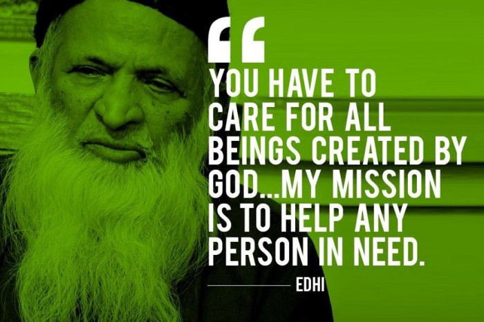

Abdul Sattar Edhi
Edhi was born into a Memon Muslim family, and publicly expressed that he was not a "very religious person" , and that he was "neither for religion or against it". On his faith, he stated that he was "a humanitarian" and spiritual, telling others that "empty words and long phrases do not impress God" and to "show Him your faith" through action.He got so many National as well as International Award for his social work. One of his last wishes was that his organs be donated for the use of the needy.

(1928-2016)